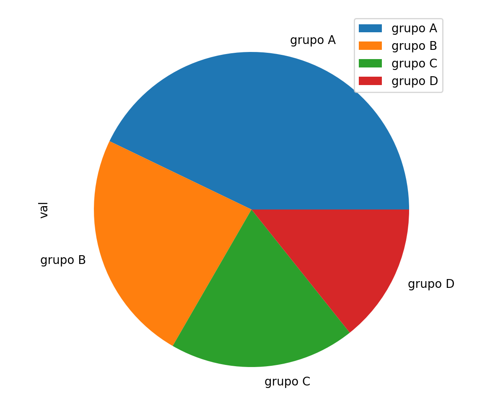

Pandas
O dataframe da biblioteca pandas possui o método plot que gera gráficos de pizza com o parâmetro kind='pie':
import pandas as pd
df = pd.DataFrame({
'group': ['grupo A', 'grupo B', 'grupo C', 'grupo D'],
'val': [9, 5, 4, 3]
})
df.set_index('group', inplace=True)
df.plot(y='val', kind='pie')
O trecho de código acima gera o seguinte gráfico:
Para melhorar a aparência do gráfico vamos alterar algumas configurações, como no código abaixo:
df.plot(
y='val',
kind='pie',
ylabel='',
colormap='GnBu_r',
legend=False,
fontsize=14,
autopct='%.1f%%'
)
ylabel='' remove o rótulo val; colormap='GnBu_r' altera o esquema de cores padrão; legend=False remove a legenda, uma vez que o gráfico já possui anotação nas fatias da pizza; fontsize=14 altera o tamanho da fonte; e autopct='%.1f%%' exibe a porcentagem da área que cada fatia representa (o formato '%.1f' significa uma casa decimal).